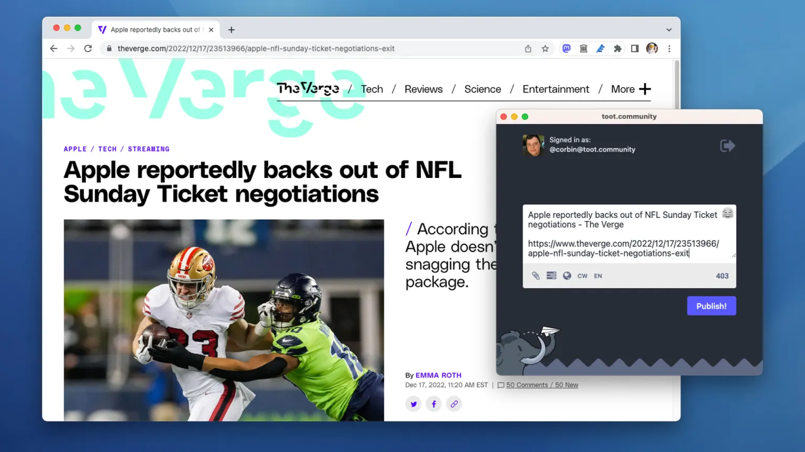

The Mastodon social media platform is rapidly growing in popularity, and as I’ve started to use it more, I’ve wanted an easier way to share links and text snippets on the platform. Browser extensions are the perfect use for that, so I made one: Share to Mastodon.
Share to Mastodon does exactly what it sounds like. Clicking the icon in the browser’s toolbar will create a popup for writing a post, with the currently-opened link and relevant text/title filled for you. You can also right-click a link on a page to share it, or select a string of text to put it in the dialog with the current page. Finally, there’s a keyboard shortcut to open the popup at any time.
Twitter, Tumblr, Facebook, and other social media networks already have share buttons all over the web, but Mastodon doesn’t — not just because it’s less popular, but also because it’s decentralized and one link won’t work for all servers. Share to Mastodon solves this by saving your home Mastodon server in the synced settings. The popup window loads your server’s own share dialog. That way, you get all the controls and features from posting with the Mastodon web app, and the extension doesn’t need API access to any of your accounts.
Share to Mastodon is available for Google Chrome, Microsoft Edge, and Firefox. Just like all my other extensions, the code is open-source and available on GitHub.